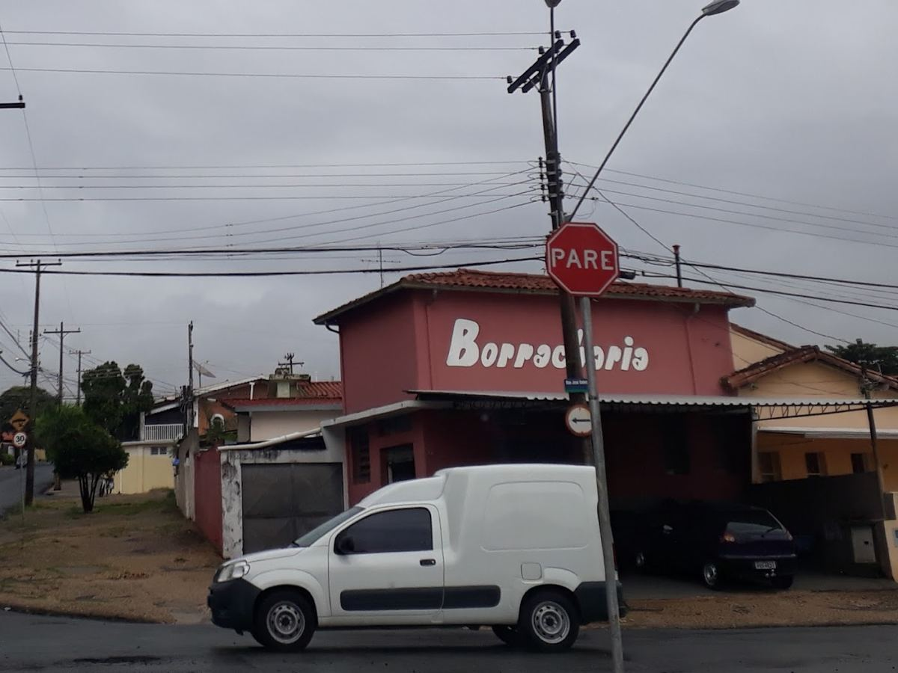

Nota 4,9 · 209 avaliações no Google
A borracharia da casa rosa, na esquina do Pare.
Pneu furado, troca, calibragem e aquele reparo que não pode esperar. Atendimento de quem conhece o bairro há tempo, preço justo e serviço bem feito.
Seg a sex 7h às 18h · sáb 7h às 14h

Por que voltam
Do jeito que os clientes contam
1
Preço justo
"Preço" é a palavra que mais aparece nas avaliações, sempre elogiando.
2
Gente honesta
Faz o que tem que ser feito, sem inventar serviço.
3
Rápido e bem feito
Pessoal treinado, atencioso e "desenrolado".
Serviços
O que resolve aqui
- Conserto de furoPrego, parafuso e vazamento
- Troca de pneuMontagem e desmontagem
- CalibragemDo carro ao utilitário
- Câmaras de arMoto e bicicleta
- RodízioPara gastar por igual
- Mecânica para carrosPergunte pelo serviço
Na dúvida, ligue antes: o pessoal diz na hora se resolve e quanto fica.
4,9 · 209 avaliações
Quem passa, recomenda
Muito bom, preço justo e pessoal desenrolado, faz o que tem que ser feito. Recomendo.Samuel · Google
Bom atendimento e preço, pessoal bem treinado e atencioso no serviço.Jaime · Google
Gente boa, o dono conheço faz tempo. Serviço bom.Resumo das avaliações · Google
Onde fica
Rua José Gabeta, 500
| Segunda a sexta | 7h às 18h |
| Sábado | 7h às 14h |
| Domingo | Fechado |
R. José Gabeta, 500 · Jardim dos Oliveiras, Campinas (SP)
Telefone (19) 3271-1726
Cartão e aproximação · entrada acessível